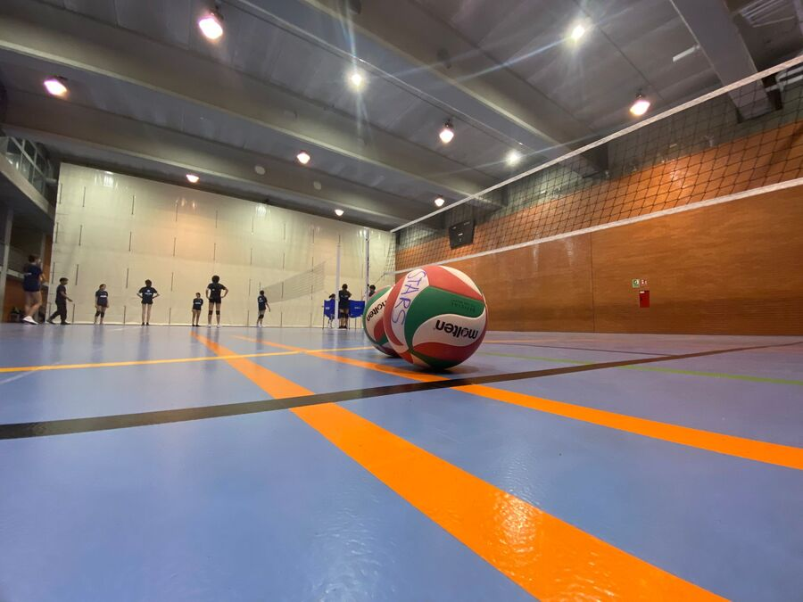

|  |
El voleibol, vóleibol, volibol, vólibol, balonvolea o simplemente vóley (en inglés: volleyball) es un deporte que se juega con una pelota y en el que dos equipos, integrados por seis jugadores cada uno, se enfrentan sobre una área de juego separada por una red central. El objetivo del juego es pasar el balón por encima de la red, logrando que llegue al suelo del campo contrario mientras el equipo adversario intenta impedir simultáneamente que lo consiga, forzándolo a errar en su intento. Surge una fase de ataque en un equipo cuando intenta que el balón toque el suelo del campo contrario mientras que en el otro equipo surge una fase de defensa intentando impedirlo.
El balón debe ser tocado o impulsado con golpes limpios, pero no puede ser parado, sujetado, retenido o acompañado. Cada equipo dispone de un máximo de tres toques para devolver el balón al campo contrario (además del contacto del bloqueo). El balón se golpea normalmente con manos y brazos. Desde hace algunos años está permitido el contacto del balón con cualquier parte del cuerpo, incluidos los pies. Una de las características más peculiares del voleibol es que los jugadores tienen que ir rotando sus posiciones a medida que van consiguiendo puntos.
El deporte tuvo su origen en Estados Unidos en 1895, siendo hoy muy popular y practicándose en casi todo el mundo. Lo regula la Federación Internacional de Voleibol y en ella se encuentran representadas 220 naciones. Han encabezado los rankings de comienzos del siglo xxi Brasil, Estados Unidos, Italia y Rusia. La lista de naciones que lideran el deporte continúa con Japón, Serbia, Polonia, Cuba, República Dominicana, China y Alemania. De acuerdo con estimaciones de la FIVB, una sexta parte de las personas en todo el mundo participa en el voleibol, activamente o como espectador.
El voleibol es uno de los deportes donde mayor es la paridad entre las competiciones femeninas y masculinas, tanto por el nivel de la competencia como por la popularidad, presencia en los medios y público que sigue a los equipos.